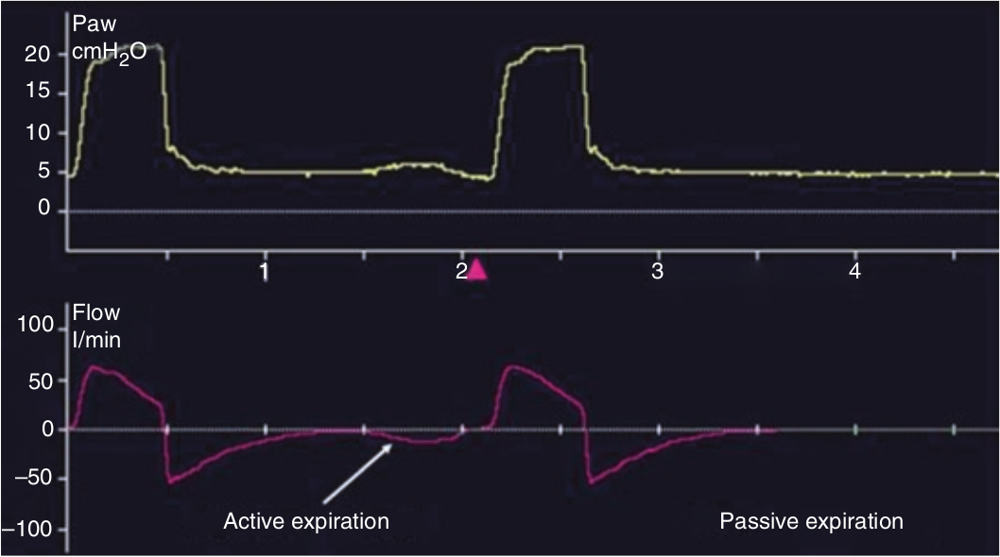

هنگام ونتیلاسیون مکانیکی حتی در صورت تنفس خودبخود، بازدم بصورت پاسیو صورت می گیرد. بازدم فعال ممکن است در موارد COPD شدید و یا آسم برونکیال دیده شود. در صورت وجود بازدم فعال شکل منحنی شدت جریان بازدمی تغییر میکند و در جهت منفی کشیده می شود. همچنین بسته به زمان وقوع بازدم فعال، مقدار حداکثر شدت جریان بازدمی نیز ممکن است افزایش یابد.

کدام مورد زیر در مورد بازدم فعال صحیح نیست؟
۱ - در COPD شایع است
۲ - شکل منحنی بازدم را تغییر میدهد
۳ - ممکن است حداکثر شدت جریان بازدمی را زیاد کند
۴ - ممکن است در بیماران شل روی دهد
۵ - می تواند با سرفه ایجاد شود